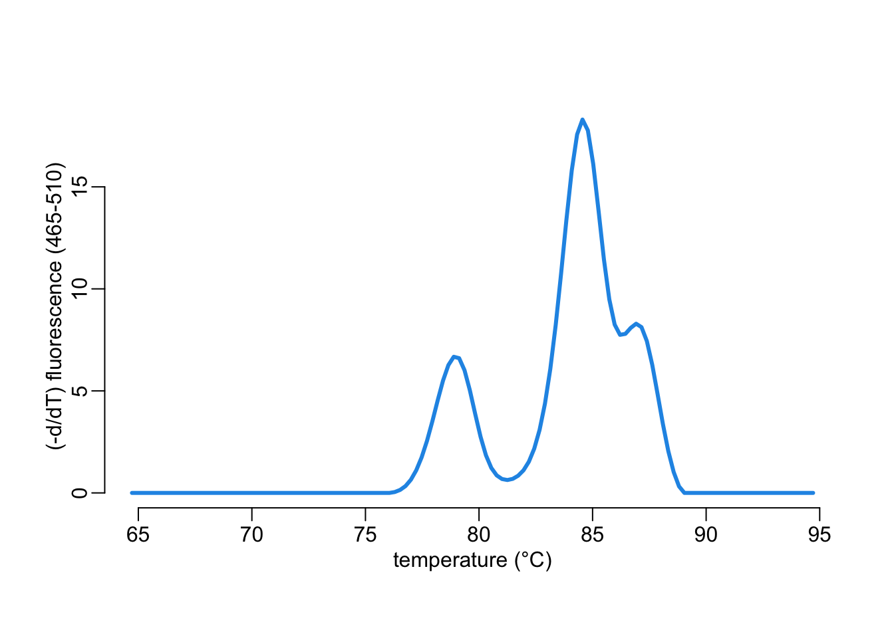

data_folder <- "/Users/MarcChoisy/Library/CloudStorage/OneDrive-OxfordUniversityClinicalResearchUnit/GitHub/choisy/RT-PCR/data"Real-time PCR melting curves analysis
The corresponding R code files are here.
Global parameters
The data are in this folder:
Packages
Installing the required packages if not already installed:
needed <- c("purrr", "stringr", "mixtools", "quantmod", "magrittr", "dplyr")
to_install <- needed[!needed %in% rownames(installed.packages())]
if (length(to_install)) install.packages(to_install)Loading the packages:
for (package in needed) library(package, character.only = TRUE)Functions
The \(x\) and \(y\) labels of the plots:
xlab <- "temperature (°C)"
ylab <- "(-d/dT) fluorescence (465-510)"A few utilitary functions:
lines2 <- function(...) lines(..., lwd = 3)
plotl <- function(...) plot(..., type = "l", lwd = 3)
plot_fluo <- function(...) plot(..., xlab = xlab, ylab = ylab)
plotl_fluo <- function(...) plotl(..., xlab = xlab, ylab = ylab)
findPeaks2 <- function(...) {findPeaks(...) - 1}
legend2 <- function(...) legend("topleft", ..., lty = 1, lwd = 3, bty = "n")
grep_val <- function(...) grep(..., value = TRUE)Loading the data
Loading the data from disk:
# names of the files:
slot_names <- data_folder |>
dir() |>
str_remove(".csv")
# loading all the data into a list of data frames:
rtpcr <- data_folder |>
dir(full.names = TRUE) |>
map(read.csv) |>
setNames(slot_names)Figures
Let’s choose one example:
a <- rtpcr[["021120"]]It looks like this:
plotl_fluo(a[[1]], a[[2]], col = 4)Finding peaks
The function findPeaks2() allows to easily find peaks:
ind <- findPeaks2(a[[2]], .05)
plotl_fluo(a[[1]], a[[2]], col = 4)
points(a[[1]][ind], a[[2]][ind], col = 2, lwd = 3)Finding baseline noise
The function below extracts the baseline noise from the x 2-column dataframe in which the first and second columns correspond to the \(x\) and \(y\) values respectively:
extract_noise <- function(x, t1, t2, ...) {
x |>
filter(if_any(1, ~ . < t1 | t2 < .)) |>
approx(...) |>
extract(c("x", "y")) |>
as.data.frame()
}Let’s try it:
noise <- extract_noise(a[, 1:2], 76, 91)
plotl_fluo(a[[1]], a[[2]], col = 4)
lines2(noise, col = 2, lty = 2)Mixture model
Removing noise:
The b data frame is a duplicate of the a data frame in which the baseline noise has been removed:
b <- a
b[, 2] <- (b[[2]] - extract_noise(b[, 1:2], 76, 91, xout = b[[1]])$y) |>
map_dbl(max, 0)
plotl_fluo(b[[1]], b[[2]], col = 4)
The following function disaggregate the -dF/dT and T data into T data:
disaggregate <- function(x, n) {
rep(x[[1]], round(n * x[[2]]))
}Normal mixture model:
fmm <- b |>
disaggregate(10) |>
normalmixEM(1 / length(ind), a[[1]][ind], 1.5)number of iterations= 44 Let’s compare:
xval <- seq(75, 90, le = 500)
components <- fmm |>
extract(c("mu", "sigma", "lambda")) |>
pmap(~ dnorm(xval, ..1, ..2) * ..3) |>
as.data.frame()
yval <- rowSums(components)
eps <- sum(unique(round(diff(b[, 1]), 7)) * b[, 2]) /
sum(unique(round(diff(xval), 7)) * yval)
plotl_fluo(b[[1]], b[[2]], col = 4)
lines2(xval, eps * yval, col = 2)
legend2(c("raw data", "model"), col = c(4, 2))Let’s plot the individual components:
plotl_fluo(b[[1]], b[[2]], col = 4)
walk(eps * components, ~ lines2(xval, .x, col = 2))
legend2(c("raw data", "model"), col = c(4, 2))Let’s look at the estimated standard deviations of the individual components:
fmm$sigma[1] 0.9230092 0.9230092 0.9230092All equal, which suggest that from now we can just look at the peak value as a good proxy of concentration. But let’s compare the raw peak values with the processed ones. Raw peak values are:
(raw_peaks <- a[[2]][ind])[1] 7.887872 19.127332 8.961717After the processing, the peak values are:
(pcs_peaks <- unname(map_dbl(eps * components, ~ .x[findPeaks2(.x)])))[1] 6.417572 17.315414 7.770044opar <- par(pty = "s")
lims <- c(6, 19)
plot(pcs_peaks, raw_peaks, xlim = lims, ylim = lims, col = 4, lwd = 3, pch = 3,
xlab = "corrected values", ylab = "raw values")
abline(0, 1)par(opar)Looking at all the data
Some utilitary functions:
multi_type <- function(x, multi = "^multi1.*") {
x[c("Tm", grep_val(multi, names(x)))]
}
remove_1col_df <- function(x) {
x[map_int(x, ncol) > 1]
}The following function draws all the lines of one data frame:
plotx <- function(x, y = NA) {
xval <- x[[1]]
yval <- x[, -1]
plot(rep(xval, ncol(yval)), unlist(yval), type = "n", xlab = xlab, ylab = ylab)
walk(yval, ~ lines(xval, .x, col = 4))
title(y)
}Let’s try it:
plotx(a[c("Tm", grep_val("^multi1.*", names(a)))])plotx(a[c("Tm", grep_val("^multi2.*", names(a)))])
The following function draws of the lines of a list of data frames:
plotxx <- function(x) {
f <- function(y) {
xval <- y[[1]]
yval <- y[, -1]
data.frame(rep(xval, ncol(yval)), unlist(yval))
}
g <- function(y) {
xval <- y[[1]]
yval <- y[, -1]
walk(yval, ~ lines(xval, .x, col = adjustcolor(4, .1)))
}
x |>
map(f) |>
bind_rows() |>
plot(type = "n", xlab = xlab, ylab = ylab)
walk(x, g)
}Let’s try it on the multi1:
rtpcr |>
map(multi_type, "^multi1.*") |>
remove_1col_df() |>
plotxx()And on the multi2:
rtpcr |>
map(multi_type, "^multi2.*") |>
remove_1col_df() |>
plotxx()multi1 <- rtpcr |>
map(multi_type, "^multi1.*") |>
remove_1col_df()